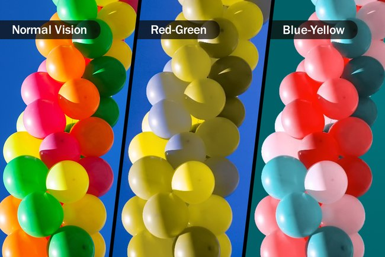

Our Colorblindness Selection Menu makes it easy for users to select their type of color blindness. Once you choose your type of color blindness, the preset values of the sliders will be adjusted to enhance the color settings on the screen according to your visual needs.
This feature can be especially helpful for individuals with color blindness, as it ensures that the software or website is accessible and user-friendly for all users. If you prefer, you can also customize the slider values to your liking. This feature provides a tailored experience that enhances your overall user experience.
To get started, simply select your type of color blindness and adjust the slider values as desired.
Colorblindness Type
{{type.viewValue}}
